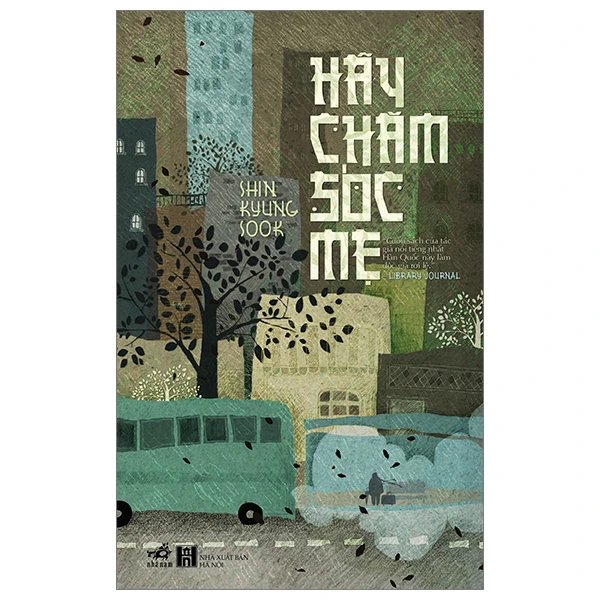

Tên sách: Hãy chăm sóc mẹ
Nhà xuất bản: Dân Trí
Năm xuất bản: 2023
Số trang: 322
Ngôn ngữ: Tiếng Việt
Người dịch: Lê Hiệp Lâm
Tác giả: Shin Kyung-Sock
Giá: 100.000đ
Mô tả sản phẩm:
Tác phẩm Hãy chăm sóc mẹ của nhà văn Hàn Quốc Kyung-sook Shin mở đầu bằng khung cảnh xáo trộn của một gia đình. Mẹ bị lạc khi chuẩn bị bước lên tàu điện ngầm cùng bố ở ga Seoul. Hai ông bà dự định lên đây thăm cậu con cả. Con gái đầu, Chi-hon, là người đứng ra viết thông báo tìm người lạc thay cho cả gia đình. “Ngoại hình: Tóc ngắn đã muối tiêu, xương gò má cao, khi đi lạc đang mặc áo sơ mi xanh da trời, áo khoác trắng, váy xếp nếp màu be”. Trong tiềm thức của mình, Chi-hon vẫn nghĩ mẹ là người thường“bước đi giữa biển người với phong thái có thể đe dọa cả những tòa nhà lừng lững đang nhìn thẳng xuống từ trên cao”. Trong khi đó, những người qua đường đáp lại thông báo tìm người lạc của cô bằng miêu tả về một “một bà già cứ lững thững bước đi, thỉnh thoảng lại ngồi bệt xuống đường hay đứng thẫn thờ trước cầu thang cuốn”. Liệu đó có phải là người mẹ mà cả gia đình cô đang cất công tìm kiếm?
Một ngày, một tuần rồi gần một tháng chầm chậm trôi qua. Người chồng và những đứa con hiện đều đã phương trưởng cả không chỉ lo sốt vó mà còn day dứt tâm can vì cảm giác tội lỗi, và rối bời “trong nỗi hoảng loạn như thể tất cả mọi người đều bị tổn thương ở vùng não”. Họ cũng lấy làm băn khoăn tại sao mẹ không biết hỏi đường về nhà cậu con cả cho đến khi phát hiện ra hai sự thật rằng mẹ không biết chữ và mẹ bệnh ung thư vú khiến đầu óc không được minh mẫn như thường.
Từ đây, những hy vọng tìm lại mẹ càng trở nên mong manh hơn… -
Nhận định về tác phẩm:
“Cuốn sách của tác giả nổi tiếng nhất Hàn Quốc này có thể làm mọi độc giả phải rơi nước mắt.” - Library Journal
“Cảm động và ám ảnh.” - Newsday
“Phần là câu chuyện về sự chuyển dịch của xã hội Hàn Quốc từ nông thôn ra thành thị, phần là khúc ca về sức mạnh của mối ràng buộc gia đình được hình thành từ sự quên mình của người phụ nữ; đây là một tác phẩm vô cùng cảm động.” - Kirkus Reviews
“Nao lòng… Thấm thía… Người đọc sẽ tìm thấy sự đồng cảm trong câu chuyện về gia đình bán chạy nhất Hàn Quốc từ trước tới nay này.” - Publishers Weekly